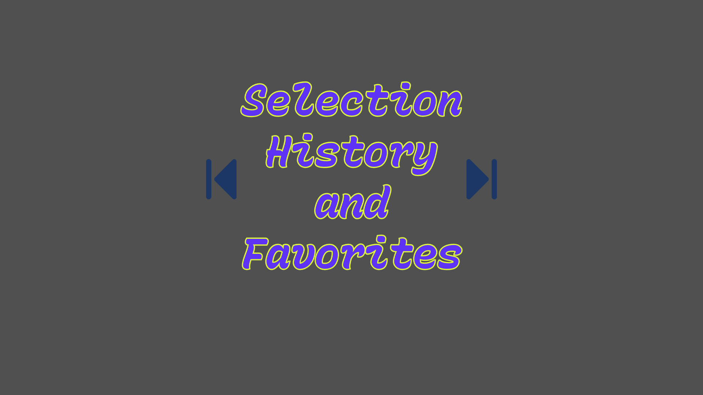

Hello! I am a passionate Unity developer and have been for over 10 years! I made a lot of editor tools over multiple projects and want to share them. Hope you enjoy! Cheers!
Tools will be added over time, full time worker and father of 4 kids, so please bear with me!

Keeps track of your history and allows you to navigate and manage it! It also supports Favorites so you never lose your favorites or more worked on assets!
Selection History Navigation with Favorites - Asset Store Link Here →